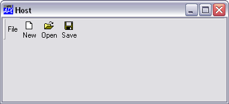
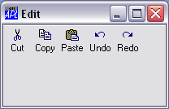
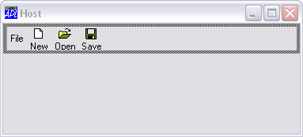
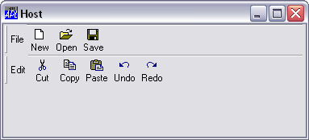

The following example illustrates the effect of docking a Form into a CoolBar.
∇ FormToCoolBand
[1] 'il'⎕WC'ImageList'('Masked' 0)('MapCols' 1)
[2] 'il.'⎕WC'Bitmap'('ComCtl32' 120)⍝ STD_SMALL
[3]
[4] 'host'⎕WC'Form' 'Host'
[5] host.Coord←'Pixel'
[6] host.Size←140 375
[7] 'host.cb'⎕WC'CoolBar'
[8] host.cb.DockChildren←'file' 'edit'
[9]
[10] :With 'host.cb.file'⎕WC'CoolBand'
[11] Caption←'File'
[12] Dockable←'Always'
[13] 'tb'⎕WC'ToolControl'('ImageListObj' '#.il')
[14] 'tb.b1'⎕WC'ToolButton' 'New'('ImageIndex' 7)
[15] 'tb.b2'⎕WC'ToolButton' 'Open'('ImageIndex' 8)
[16] 'tb.b3'⎕WC'ToolButton' 'Save'('ImageIndex' 9)
[17] :EndWith
[18]
[19] :With 'edit'⎕WC'Form' 'Edit' ('Coord' 'Pixel')
[20] Size←100 200
[21] Dockable←'Always'
[22] Coord←'Pixel'
[23] 'tb'⎕WC'ToolControl'('ImageListObj' '#.il')
[24] 'tb.b1'⎕WC'ToolButton' 'Cut'('ImageIndex' 1)
[25] 'tb.b2'⎕WC'ToolButton' 'Copy'('ImageIndex' 2)
[26] 'tb.b3'⎕WC'ToolButton' 'Paste'('ImageIndex' 3)
[27] 'tb.b4'⎕WC'ToolButton' 'Undo'('ImageIndex' 4)
[28] 'tb.b5'⎕WC'ToolButton' 'Redo'('ImageIndex' 5)
[29] :EndWith
∇

The following picture shows the effect of dragging the client Form to the CoolBar in the host, just before the mouse button is released.

The next picture shows the result after docking. The client Form has become a CoolBand called host.cb.edit.
